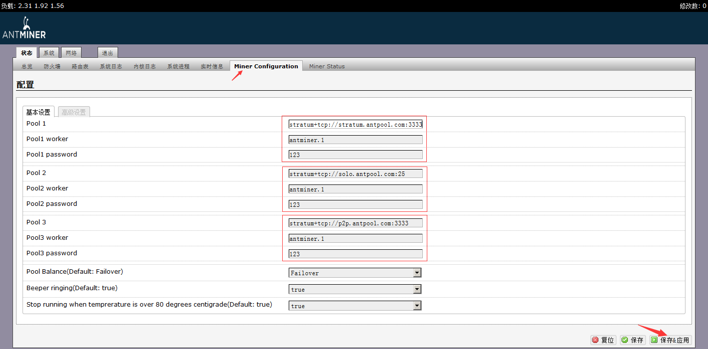
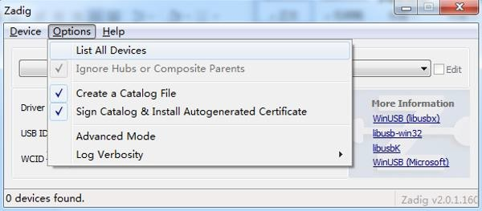
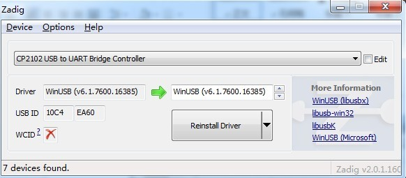
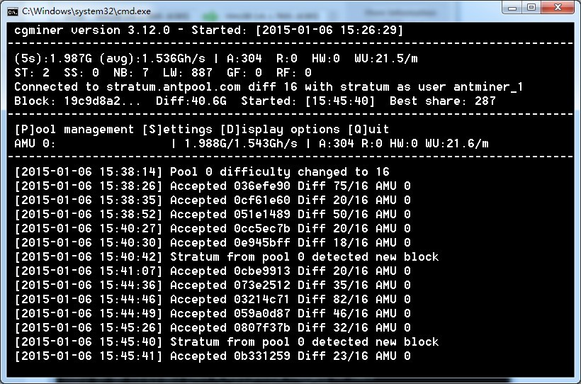

蚂蚁矿池介绍与使用
矿池简介
蚂蚁矿池是比特大陆投入很多资源开发的高效的比特币矿池，致力于为矿工提供更友好的界面、更完善的功能、更方面的使用和更丰厚透明的收益，并为比特币的发展做出更多的贡献。
蚂蚁矿池提供Stratum和P2P两种挖矿模式，其中Stratum挖矿模式是蚂蚁矿池团队自主开发的矿池系统，其收集所有连接矿机的算力进行Stratum挖矿；P2P挖矿模式为继承并接入p2pool挖矿网络中进行挖矿。
为了提供更稳定的挖矿，我们将在全球各地部署矿池节点，当前我们已经在美国、欧洲、香港、北京、深圳、杭州、青岛等地部署了矿池节点，并会不断的扩充节点，用户在接入矿池时，会自动通过负载均衡的方式分配到离自己最近的节点进行挖矿。
挖矿模式:
蚂蚁矿池提供Stratum和P2P两种挖矿模式：
Stratum挖矿模式:
Stratum挖矿模式，是蚂蚁矿池团队自主开发的矿池系统，其收集所有连接矿机的算力进行Stratum挖矿，并按照PPLNS等分配方式根据矿工贡献分配收益，Stratum模式经过我们不断的开发和完善，能够提供稳定、安全的挖矿服务，以及更高的挖矿收益。用户可在矿机中配置Stratum挖矿服务URL，进行Stratum模式挖矿。
Stratum挖矿服务:
stratum.antpool.com:3333
stratum.antpool.com:443
stratum.antpool.com:25
P2P挖矿模式:
P2P挖矿模式是继承p2pool开源项目而推出的挖矿模式，其为矿工提供了一种点对点的挖矿方式，防止算力集中在某个中心化的矿池而对比特币网络进行51%攻击。蚂蚁矿池致力于比特币有更好的发展，并希望在矿池领域做出一些贡献，我们现在还在不断的完善P2P的挖矿模式，提供更稳定、高效的服务。用户可在矿机中配置P2P挖矿服务URL，进行P2P模式挖矿。
P2P挖矿代码发布在BITMAIN Github上，链接为：https://github.com/bitmaintech/p2pool
希望众多的比特币爱好者和我们共同开发和完善，建立一个更加安全、稳定、高效的P2P矿池。
P2P挖矿服务:
p2p.antpool.com:3333
p2p.antpool.com:25
矿池配置:
| Stratum | P2P | |
| Stratum URL |
stratum+tcp://stratum.antpool.com:3333 stratum+tcp://stratum.antpool.com:443 stratum+tcp://stratum.antpool.com:25 |
stratum+tcp://p2p.antpool.com:3333 stratum+tcp://p2p.antpool.com:25 |
| 用户名 |
挖矿用户名.矿工名 挖矿用户名_矿工名 |
挖矿用户名.矿工名 挖矿用户名_矿工名 |
| 挖矿用户名和矿工名须由英文字母或者数字组成 | ||
| 密码 | 任意 | 任意 |
| 分配方式 | PPLNS (0手续费) PPS (2.5%手续费) SOLO (1%手续费) |
PPLNS (0手续费) |
| Block交易费 | 不进行分配，用于矿池开发和维护费用 | 分配 |
| 分配规则 | AntPool出块得到3个确认后进行分配 | P2pool出块得到3个确认后进行分配 |
| 支付规则 | 北京时间每天早上8:00-10:00自动打款，最低额度为0.001BTC | |
付款方式:
| 付款方式 | 手续费 | 说明 |
| PPLNS | 0% | 矿池挖到新块且块得到3个确认后，根据过去2.5个难度周期提交的工作量占总工作量的比例，对块收益25 BTC进行分配 (块收益中交易费部分不进行分配，用于系统开发维护费用) |
| PPS | 2.5% | 收益=25 BTC*工作量/当前网络难度 |
| SOLO | 1% | 矿池挖到的新块为用户挖出且块得到3个确认后，将块收益25 BTC全部分配给用户 (块收益中交易费部分不进行分配，用于系统开发维护费用)，如果用户未挖到新块，则没有收益 |
挖矿教程
蚂蚁S3矿机:
蚂蚁出厂矿机IP写在风扇上方的纸条上，最新固件默认IP地址为192.168.1.99
硬件连接正常输入无法打开的可能是矿机和电脑IP不在同一个网段，需要设置成同一网段。
如下图设置：
矿机设置:
1.浏览器输入蚂蚁矿机的默认IP地址 192.168.1.99 进入登录页面，矿机默认用户帐号 root，密码 root。
2.默认是中文的界面，如果不是，看下图设置，注意我用红框框住的位置，选择chinese后，点击右下角的save&apply， 等待大概30秒时间，如果还是英文请刷新一下浏览器就可以了。：
3.登录矿机后，点击 网络 ----- 接口 ，可以看到 LAN 和 WAN ，其中 LAN为工厂调试使用，用户挖矿应修改WAN口，默认都是可以不用修改的。特别注意： LAN和WAN 不能在同一IP段！ WAN 这个链接，不能删除！ 由于第一版蚂蚁矿机没有RESET（恢复出厂设置）功能，一旦配置错误，只能更换控制板解决 点击修改按钮，进入WAN口的IP配置页面，默认都不需要修改的，如果有两台以上蚂蚁的，请修改IP为其他的地址，把后面的99改掉，只要IP没被占用的 就可以，比如ip改为192.168.1.100。另外DNS 192.168.1.1可设置 8.8.8.8（谷歌） 202.106.0.20（联通） 114.114.114.114 （电信），修改后一定要点击保存并应用
4.点状态再点击 Miner Confinguration ，进入矿池配置页面。
矿池一共分为三组，可以填写三组，如果第一组矿池挂了会自动切换到第二组,下面配置的矿池是蚂蚁矿池，参数如下：
| 矿池 | URL | 矿工 | 密码 |
| Pool1 | stratum+tcp://stratum.antpool.com:3333 | antminer.1 | 123 |
| Pool2 | stratum+tcp://vip.antpool.com:3333 | antminer.1 | 123 |
| Pool3 | stratum+tcp://stratum.antpool.com:443 | antminer.1 | 123 |
配置好了就可以进行挖矿了，依旧点击右下角的 保存&应用。 
5.进入 Miner Status，刷新几次，即可挖矿，有的矿池速度反应不是很及时，你可以在这个页面中查看速度，确认矿机是否正常工作。
蚂蚁U1矿机:

1 下载：
2 安装驱动
步骤1：安装CP210xVCP 驱动程序
步骤2：插入antminer-U1
步骤3：打开Zadig并单击 "Options->List All Devices" 
步骤4：选择 CP2102 USB to UART Bridge Controller,然后单击 "Reinstall Driver" 
3 运行cgminer
cgminer.exe --bmsc-options 115200:20 -o stratum+tcp://stratum.antpool.com:3333 -u antminer_1 -p 123 
蚂蚁U3矿机:

1 下载：
2 安装驱动
步骤1：安装CP210xVCP 驱动程序
步骤2：插入antminer-U3
步骤3：打开Zadig并单击 "Options->List All Devices"
步骤4：选择 CP2102 USB to UART Bridge Controller,然后单击 "Reinstall Driver"
3 运行cgminer
cgminer.exe --bmsc-options 115200:0.6 -o stratum.antpool.com:3333 -u antminer_1 -p 123 --bmsc-voltage 0800 --bmsc-freq 1286

矿机购买
购买矿机可以访问比特大陆官方网站：
算力购买
购买算力可以访问比特大陆Hashnest算计交易平台：
矿机监控
矿机监控可以访问比特大陆智能挖矿系统：
FAQ
- 支付收不收取网络手续费？
- 支付不收网络手续费
- 我的网络访问不了3333端口怎么办？
- 这可能是您的网络运营商封锁了3333端口, 我们准备了备用端口：25。
- 什么是运气值?
- 矿池采用PPLNS 0手续费收益分配模式，矿池的运气值越高, 那么在同等算力前提下, 矿工的收益要比其它矿池(运气值低的)的矿工收益高。
- 为什么我的矿机开机后矿机状态页面有算力，但是矿池页面上没有算力？
- 蚂蚁矿池采用分布式方式，算力数据显示现在有一定的延时（大概10分钟左右），我们还在优化方案，并尽快提供更快速的显示。
- 为什么我在p2p.antpool.com上挖，看到AntPool出块后没有进行分款？
- P2P模式是接入p2pool网络进行挖矿，只有在p2pool出块后，我们才会对P2P模式的收益进行分配，当前我们正在抓紧完善P2P部分，将会显示更详细的信息。
客服
| 客服中心 | 客户中心 |
|---|---|
| 论坛 | 论坛 |
| 客服邮箱 | support@bitmain.com |
| 备注 | 欢迎矿工朋友前来咨询问题, 比特大陆客服团队会作耐心细致的解答。如遇排队情况, 请稍等片刻, 敬请谅解! |